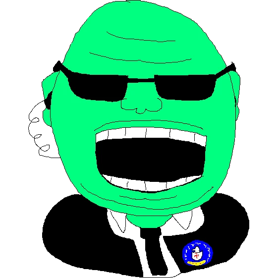

Midnight Maniac
Hall of fame


About Me, Bitch!
"About Me" sections are way harder to write than it seems, and you only realize that when you actually start writing them.
javascript is fake and gay,
and you should stop using it.

HAHAHAHA I LOVE CODING HAHAHHAHAHAHA I LOVE CODING HAHAHA *shell loading sound* HAHAHHAHAHHA *BOOOM!*
Art Gallery
some cool images I made with blender a while ago


03/02/24

Cigars are weird.
Yesterday I had my first cuban cigar. It was pretty mid tbh. My friend had 3 of those fancy uncut cigars laying around,so we tought it would be a nice idea to smoke one. We hadnt smoked anything before, and I mean not even cigarretes or those cheap vape thingys, and do not plan to smoke anyhing in the future (maybe just another cigar).
It is kinda funny because he had those fancy cigars but no cutter, so we had to use the single cutting object in the house, a gardening fucking scissor, well there was those cheap butter knives laying around too, but we decided it would be better to use the scissors.
So we cut off the tip of the cigar and got out of his house, with a cheap bic lighter, a mixture of vodka lemon juice and this strange looking fruit and also a pack of cookies (the fruit was pitaya iirc).
Then we arived at a safe spot to smoke (or so we thought) and lit up the cigar. Not gonna lie it was pretty hard and I burned my fingers in the process, but once we got it lit we started puffing.
We coughed a lot, and I mean a lot, we coughed every time we inhaled smoke, might be because of our healthy lungs (smokers are seething), or something, and it tasted like soil or cement or something, not even kidding, afterwards I could swear I licked a wall. But we felt badass ngl. We tought we looked like smoker from one piece.
Oh and also while we were smoking there, in our "safe spot" some random ass old people kept looking at us from inside their car. So from five to five minutes some random old head would pass by in a car looking at us, and even fast, they were like 20km/h (muricans are seething) in a busy street, at night. If you are old and are reading this pleas, stop looking at people smoking at night, It makes the uncofortable
But anyways we finished the cigar, drinked all of the elixir and headed home, after using half a can of deodorant to hide the smell, we then took a shower and I headed home, which in itself was also a funny experience, because public transport, lol.
After all it wasnt that mid, we just didnt expect the wood/soil taste of the cigar, and we also had a funny talk in the way back home of how it is impossible to get addicted to something as exotic (for the lack of an appropriate word) as a cigar.
If you want to try it someday too, make sure to bring deodorant and something for the throat, if you dont want to sound and smell like a crazy military dude or a cuban. OH AND ALSO Dont inhale the smoke, im a dumbass, and tysm louceph for telling me that, you're a massive fucking legend.
malaysia be like:
/dev/null" width="300px">User Reviews:
CIA Agent In My Basement

This website is very cool!
5 stars
Stephen Hawking
I want to go to the Island!
5 stars
Adolf Hitler

...
no info